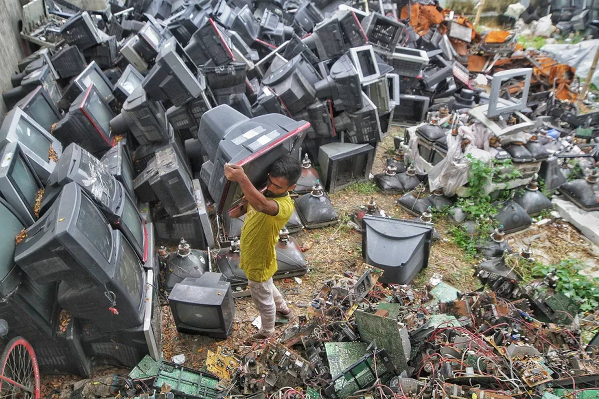
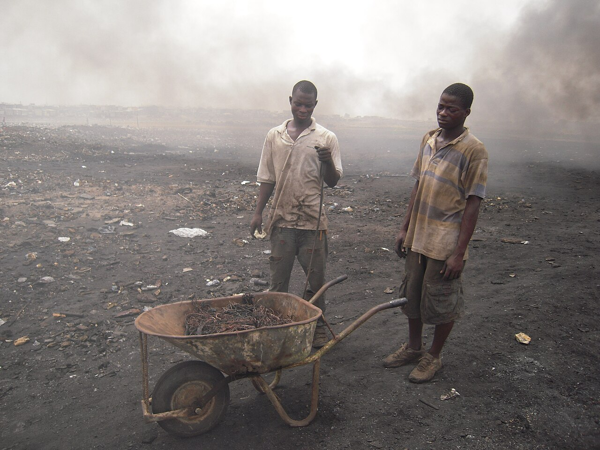

Caio Mezini
Caio Mezini de Paula Machado

A vida depois do descarte
62 milhões de toneladas de lixo eletrônico foram geradas em 2022. A reciclagem documentada não acompanha. Reiniciar o modelo de consumo pode levar algum tempo.
Fonte: UNITAR/ITU, Global E-waste Monitor 2024.
Quem fez esta edição
Instituto J&F · Trabalho Multidisciplinar · São Paulo, 2026
Caio Mezini de Paula Machado
David Lucas Reche Garcia Bento
Guilherme Fernandes Marcato Ferreira
Matheus Rezende Nascimento Raimundo
Pedro Henrique Casarini Alves
Pedro Yada Barbeitos
Opinião da equipe
Na obra O Princípio Responsabilidade, Hans Jonas defende que o avanço tecnológico deve considerar suas consequências para as futuras gerações. Entretanto, a substituição acelerada de dispositivos e o descarte inadequado de resíduos eletrônicos contrariam esse princípio. Nesse cenário, a lógica consumista intensifica a geração de lixo eletrônico, enquanto sua gestão inadequada ameaça comunidades vulneráveis.
A crescente geração desses resíduos resulta de um sistema econômico que incentiva a troca constante de aparelhos. Segundo Jean Baudrillard, os objetos são consumidos não apenas pela utilidade, mas pelo significado social que carregam. Assim, a publicidade estimula a obsolescência percebida, fazendo produtos funcionais parecerem ultrapassados. Essa renovação precoce intensifica a extração de recursos naturais e a produção de resíduos, impondo custos socioambientais que ultrapassam o preço dos aparelhos.
Além disso, a gestão inadequada dos resíduos amplia a exposição de comunidades vulneráveis. O caso histórico de Guiyu, na China, marcado pelo processamento de lixo eletrônico, evidencia os danos dessa atividade. Práticas como a queima de componentes e o desmonte sem controle ambiental podem liberar metais pesados e substâncias tóxicas, contaminando o ambiente e ameaçando trabalhadores e moradores. Dessa forma, os impactos do descarte recaem desproporcionalmente sobre populações vulneráveis, revelando a desigualdade dessa cadeia.
Portanto, o poder público, junto a órgãos ambientais e empresas tecnológicas, deve fortalecer a logística reversa e fiscalizar o tratamento dos resíduos eletrônicos. Para isso, deve ampliar a coleta formal e o rastreamento dos materiais, responsabilizando fabricantes pelo ciclo de vida dos aparelhos e exigindo reparabilidade e informações claras sobre sua durabilidade. Também deve coibir publicidade que estimule substituições precoces. Assim, será possível reduzir a geração de resíduos e os danos às comunidades vulneráveis, conciliando inovação e responsabilidade socioambiental.
Apresentação
É fácil reconhecer o começo da vida de um aparelho na nossa rotina. Lembramos da compra, da primeira configuração, da expectativa de usar algo novo. Já o fim costuma ser menos definido: uma tela quebrada, uma atualização que não chega, uma gaveta que vai ficando cheia.
Mesmo quando entregamos o equipamento para coleta, sabemos pouco sobre o que acontece depois. Quem o recebe? Alguém tenta fazê-lo funcionar? Para onde seguem suas peças? O que não pode ser aproveitado?
Esta edição acompanha esses caminhos. Para entendê-los, também precisamos voltar um pouco: por que substituímos aparelhos e como eles perdem valor para nós?
O tamanho desse percurso aparece nos dados. O Global E-waste Monitor 2024, relatório do Instituto das Nações Unidas para Treinamento e Pesquisa (UNITAR) e da União Internacional de Telecomunicações (UIT, ou ITU na sigla em inglês), estima que o mundo gerou 62 milhões de toneladas de resíduos eletrônicos em 2022, média de 7,8 kg por habitante. São indicadores globais; não descrevem quanto cada pessoa efetivamente descartou (UNITAR/ITU, 2024).
Dois sociólogos ajudam nessa leitura. O polonês Zygmunt Bauman descreveu uma sociedade de consumidores, em que o desejo de comprar precisa ser renovado sem parar e a satisfação com cada compra dura pouco. O francês Pierre Bourdieu mostrou que o gosto não é só pessoal: ele se relaciona às condições sociais de cada grupo, e os objetos que escolhemos comunicam pertencimento e posição social. A partir dessas perguntas, seguimos o equipamento até encontrar quem avalia, conserta, separa e processa aquilo que deixamos para trás.
Somos estudantes de desenvolvimento de sistemas. Essa história também nos envolve: as escolhas de software podem ampliar ou restringir o tempo durante o qual um aparelho permanece útil.
Nesta edição
A vida depois do descarte
Um eletrônico sai das nossas mãos, mas continua passando pelas mãos de outras pessoas. Entre a entrega, o conserto, a desmontagem e a recuperação dos materiais, há caminhos que quase nunca acompanhamos.
Capítulo 01
Um celular pode continuar ligando e, ainda assim, deixar de parecer suficiente. A câmera do lançamento promete mais. O design mudou. O modelo que antes despertava interesse agora parece antigo.
O sociólogo polonês Zygmunt Bauman analisou como o consumo participa da construção da identidade e das relações sociais. Em Vida para consumo, oferece uma lente para entender uma sociedade em que o desejo precisa ser renovado continuamente. A satisfação com uma compra pode durar menos que o próprio produto: logo aparece outra promessa de novidade.
Isso ajuda a explicar a obsolescência percebida, quando o aparelho perde valor aos olhos do usuário mesmo sem perder suas funções. Mas existem outros motivos para uma substituição.
A obsolescência programada envolve a limitação deliberada da vida útil. Não basta que um equipamento quebre cedo para provar essa prática: a intenção precisa ser sustentada por evidências.
Já a obsolescência tecnológica, que pode envolver software, aparece quando incompatibilidades ou perda de suporte restringem o uso. Um aparelho ainda liga, mas deixa de executar um aplicativo necessário.
Esses mecanismos não são sinônimos. Uma troca também pode resultar de bateria desgastada, defeito, conserto caro ou necessidade de trabalho e estudo.
O sociólogo francês Pierre Bourdieu investigou como gostos e práticas de consumo se relacionam às condições sociais e às diferenças entre grupos. Sua leitura acrescenta outra dimensão: os bens têm utilidade, mas também participam das relações sociais. Um smartphone pode funcionar como ferramenta e como sinal de gosto, pertencimento ou status.
Isso não significa que toda troca seja vaidade. Significa que necessidade, desejo e reconhecimento podem se misturar. Antes de chamar um aparelho de ultrapassado, vale perguntar: o que envelheceu — suas funções, sua compatibilidade ou o significado que atribuímos a ele?
Há interesses econômicos nesse movimento. Quando a substituição resulta em uma nova compra, fabricantes e varejistas podem obter receita com a venda. Anunciantes e intermediários também podem ser remunerados por campanhas e transações. Isso descreve possibilidades de receita, não uma medida de lucro nem uma prova de que uma empresa provocou deliberadamente a perda de utilidade de um produto.
A leitura de Bauman ajuda a perceber que a pressão pela novidade também alcança a imagem que construímos de nós: consumir pode participar da tentativa de continuar sendo reconhecido. Bourdieu permite perguntar como esse reconhecimento se organiza. Os gostos e os bens que valorizamos se relacionam às condições sociais e podem marcar diferenças entre grupos. Aplicadas ao smartphone, essas ideias ajudam a explicar por que uma marca ou modelo pode prometer pertencimento além de funções. Essa é nossa interpretação do consumo de eletrônicos a partir dos autores, não uma pesquisa deles sobre celulares (Bauman, 2008; Bourdieu, 1979).
Os interesses também podem entrar em conflito. Uma assistência independente pode ganhar ao prolongar o uso, enquanto uma venda de substituição deixa de ocorrer. O consumidor pode se beneficiar de uma melhoria necessária, mas assumir uma despesa evitável quando o aparelho anterior ainda o atendia. Para dizer quem lucrou e quanto em um caso específico, seria preciso examinar preços, custos e contratos.
As duas leituras se encontram na diferença entre continuar funcionando e continuar sendo desejado. Quando o reconhecimento depende de acompanhar novidades, conservar um aparelho pode deixar de parecer suficiente, mesmo que ele ainda atenda ao uso. Por isso, enfrentar o descarte também exige discutir as condições que estimulam a substituição, junto das possibilidades de reparo e de acesso à tecnologia.
Capítulo 02
Depois da substituição, o aparelho pode ficar em casa. Guardamos porque talvez alguém precise, porque há arquivos importantes ou porque não sabemos onde entregar.
Esse armazenamento é diferente de descarte. Também é diferente de reúso: um equipamento parado ainda não ganhou outro usuário.
Na pesquisa de 2023 da Green Eletron, entidade gestora de logística reversa ligada ao setor eletroeletrônico, feita com o instituto Radar Pesquisas, 85% dos entrevistados afirmaram guardar algum eletrônico sem utilidade em casa. O levantamento usou questionário online e ouviu 2.640 pessoas de 18 a 65 anos, das classes A, B e C, em 21 estados onde a entidade tinha coletores. O resultado descreve respostas nesse universo; não mede o peso armazenado nem significa que 85% dos aparelhos estejam em gavetas (Green Eletron, pesquisa de 2023, pp. 9 e 15).
Em outra pesquisa, de 2025, 43% das pessoas que guardavam aparelhos disseram não saber como descartá-los corretamente. O percentual se refere a esse grupo, não à população inteira. Como os levantamentos são diferentes, os resultados não devem ser usados sozinhos para afirmar uma evolução entre os anos (Green Eletron, 2025a).
Os levantamentos da Green Eletron ajudam a conhecer hábitos declarados, mas não são um censo do descarte. Na divulgação do dado de 43%, não há detalhamento da amostra desse subgrupo. Isso limita o que podemos afirmar sobre ele (Green Eletron, pesquisa de 2023; 2025a).
O desconhecimento relatado indica uma dificuldade de informação entre quem guarda aparelhos. Não demonstra, sozinho, que faltem pontos de coleta ou que eles sejam distantes. A conclusão que tiramos é mais precisa: orientar a entrega faz parte da solução, enquanto as condições de acesso precisam ser verificadas em cada território.
Chamamos de resíduos de equipamentos eletroeletrônicos, ou REEE, os equipamentos descartados que dependem de corrente elétrica ou de campos eletromagnéticos para funcionar, incluindo componentes que fazem parte deles no momento do descarte. O termo abrange produtos diferentes, que podem exigir formas distintas de recebimento e tratamento.
Um computador, uma geladeira e uma lâmpada não devem ser tratados como se percorressem a mesma rota. Mesmo entre pequenos aparelhos, as condições de recebimento variam.
O caminho começa com uma avaliação: o equipamento ainda pode servir a alguém? Precisa de reparo? Há uma organização que possa recebê-lo? Antes de encaminhar, é necessário confirmar quais itens são aceitos e como funciona a entrega.
A pergunta “onde descartar?” abre a investigação. A seguinte é: “o que esse lugar faz com o que recebe?”.
Em vídeo
Capítulo 03
Num sistema organizado, o ponto de recebimento pode ser apenas o primeiro endereço. Os equipamentos precisam ser armazenados e encaminhados para as etapas seguintes.
A logística reversa organiza o retorno de produtos e resíduos após o uso. O Decreto federal nº 10.240/2020 regulamenta a logística reversa de eletroeletrônicos domésticos. Para os produtos que ele abrange, há atribuições distribuídas entre fabricantes, importadores, distribuidores, comerciantes e consumidores.
A entrega pelo consumidor é uma parte desse sistema. Depois dela, outras organizações assumem atividades de transporte, recebimento e processamento. Não se pode presumir que todas aconteçam no mesmo lugar.
Por isso, coleta e reciclagem não são a mesma coisa. Saber que um aparelho foi recebido ainda não informa se voltou ao uso, foi desmontado ou teve materiais recuperados.
Segundo o Global E-waste Monitor 2024, o relatório do UNITAR e da UIT citado na apresentação, em 2022, apenas 22,3% da massa de resíduos eletrônicos gerada no mundo teve coleta e reciclagem formal documentadas. Os outros 77,7% ficaram fora desse registro; isso não prova que toda essa parcela foi descartada irregularmente. O indicador acompanha massa de resíduos, não a porcentagem de pessoas que diz entregar corretamente (UNITAR/ITU, 2024).
No Brasil, o mesmo relatório estimou cerca de 2,4 milhões de toneladas de resíduos eletrônicos geradas em 2022, o maior volume da América do Sul. O número dimensiona a necessidade de uma estrutura nacional de recebimento e tratamento. Ele mede geração, não coleta: não podemos aplicar a taxa mundial de 22,3% ao país nem concluir, com esse dado, qual parcela brasileira teve destinação adequada (UNITAR/ITU, 2024, p. 70).
Acompanhar o percurso exige rastreabilidade: registros que permitam verificar os encaminhamentos e destinos. Para uma reportagem local, isso significa identificar quem recebe os lotes, quais operações realiza e para onde envia cada fração.
Capítulo 04
A triagem organiza os equipamentos recebidos e ajuda a definir seus próximos caminhos. As condições do aparelho, as possibilidades técnicas e a estrutura da organização influenciam essa decisão.
É aqui que conceitos frequentemente confundidos começam a se separar.
O reúso mantém o produto ou um componente em utilização, sem transformá-lo em matéria-prima. O reparo busca corrigir um defeito. O recondicionamento envolve avaliação e intervenções para preparar um equipamento usado para voltar a funcionar adequadamente.
Já a reciclagem transforma materiais de resíduos para que possam ser utilizados novamente. Um computador recuperado para uma biblioteca percorreu uma trajetória diferente daquela de uma carcaça processada para recuperação de metal.
O Programa Computadores para Inclusão, do Ministério das Comunicações, é uma iniciativa do governo federal voltada à inclusão digital. Nele, os Centros de Recondicionamento de Computadores recebem equipamentos de informática e realizam atividades como testes, preparação e recuperação. O programa prevê também o encaminhamento das partes sem aproveitamento para destinação adequada.
Esses centros são um exemplo de caminho possível. Não representam o destino de todo eletrônico entregue para coleta.
Segundo balanço divulgado pelo Ministério das Comunicações em 2025 e atualizado em junho daquele ano, esse programa havia acumulado, desde o início de sua atuação, mais de 9,2 mil toneladas de eletroeletrônicos com tratamento adequado. O número soma toda a atuação do programa até então: não são 9,2 mil toneladas de computadores doados, nem o total tratado no país naquele ano (Ministério das Comunicações, 2025).
Esse resultado documenta a atuação de uma iniciativa brasileira e mostra um caminho que já existe. Mas o volume tratado não informa, sozinho, quantos computadores voltaram ao uso nem por quanto tempo atenderam a quem os recebeu. Para avaliar a inclusão digital, precisamos acompanhar também o funcionamento após a entrega. É essa diferença entre tratar resíduos e garantir acesso que orienta nossa proposta para o recondicionamento.
O benefício dessa rota pode chegar a quem recebe um equipamento em condições de uso e a quem se forma para realizar o trabalho. Assistências e empresas de recondicionamento também podem obter receita por serviços e vendas. Benefício social e resultado comercial podem coexistir; devem ser avaliados pelas condições do equipamento entregue, do acesso e do trabalho.
A segunda vida depende de avaliação e trabalho. Entre um equipamento recebido e outro pronto para uso, existem decisões sobre funcionamento, desempenho e condições de atendimento ao próximo usuário.
Capítulo 05
Um computador recuperado precisa conseguir realizar as tarefas para as quais será destinado. Inclusão digital exige condições de uso, manutenção e acesso aos programas necessários.
É nesse ponto que hardware e software se encontram novamente. Um equipamento pode estar fisicamente conservado e enfrentar limitações de compatibilidade. Por outro lado, escolhas de desenvolvimento podem permitir que determinadas tarefas continuem acessíveis em máquinas com menos recursos.
Requisitos mínimos, consumo de memória e compatibilidade influenciam quem consegue usar um sistema. Prolongar o uso também exige considerar atualizações de segurança e as necessidades reais de cada pessoa.
Bourdieu ajuda a perceber que o valor atribuído a um objeto também depende das relações sociais em que ele circula. Os gostos não se formam isoladamente: se relacionam às condições de vida e às diferenças entre grupos. Aplicada ao equipamento usado, essa leitura permite separar a perda de prestígio da perda de utilidade, sem presumir que todas as pessoas valorizem o novo da mesma forma (Bourdieu, 1979).
Essa diferença importa para a inclusão digital. Se quem recebe um computador recondicionado precisa aceitar limitações que impedem estudar ou trabalhar, a entrega mantém uma desigualdade de acesso. Por isso, defendemos que a avaliação considere as tarefas do próximo usuário e as condições de manutenção. O equipamento usado precisa ampliar possibilidades reais, não apenas mudar de endereço.
Isso não justifica oferecer equipamentos inadequados a quem tem menos renda. O objetivo deve ser ampliar o acesso com qualidade. Doar algo sem condições de uso apenas transfere a dificuldade para outra pessoa.
Capítulo 06
Nem todo equipamento pode voltar ao uso inteiro. Em alguns casos, componentes aproveitáveis podem servir à recuperação de outras unidades. As demais partes seguem caminhos de separação e tratamento.
Na desmontagem, o aparelho deixa de circular como um objeto único. Placas, cabos, carcaças e outros componentes passam a exigir encaminhamentos diferentes.
Essa etapa não equivale à reciclagem completa. Separar uma placa ainda não significa recuperar os metais presentes nela. Entre a desmontagem e a obtenção de materiais utilizáveis existem outras operações.
O processamento pode envolver separação física e tratamentos industriais, conforme as características do material e a tecnologia utilizada. Essas atividades exigem instalações e controles apropriados.
Também não existe garantia de recuperação total. A mistura de materiais, o projeto do produto, a infraestrutura disponível e os custos interferem no que pode ser aproveitado.
Dizer que um eletrônico “foi reciclado” pode esconder uma cadeia extensa. Uma descrição mais clara identifica quais materiais foram separados, quem os recebeu e quais resultados foram obtidos.
reúnem materiais e componentes diferentes. Sua separação é uma etapa anterior à recuperação dos materiais.
podem seguir para processamento conforme sua composição e as condições de recebimento.
variam em composição e tecnologia. Exigem avaliação e encaminhamento próprios.
Esse percurso deve ser confirmado com o operador responsável. Uma rota possível não é um destino garantido.
Capítulo 07
A recuperação de materiais busca aproveitar frações que possam retornar a atividades produtivas. Mas a existência de material valioso dentro de um aparelho não garante sua recuperação.
É preciso separar, transportar e processar. O valor potencial dos materiais convive com custos e dificuldades para obtê-los.
O Global E-waste Monitor 2024 estimou em US$ 91 bilhões o valor dos metais contidos nos resíduos eletrônicos gerados mundialmente em 2022. O valor dos metais recuperados foi estimado em US$ 28 bilhões. Esses montantes não são lucro das recicladoras nem pagamento aos catadores: representam valores de materiais em escalas distintas da cadeia (UNITAR/ITU, 2024).
Quem pode obter receita depois do descarte? Operadores de coleta e tratamento podem receber por serviços; comerciantes podem negociar equipamentos e peças; recicladores e refinadores podem vender materiais recuperados. As indústrias compradoras obtêm uma fonte de insumos. A remuneração e a margem dependem dos custos, da qualidade dos materiais e dos contratos de cada operação.
Isso ajuda a entender por que um resíduo ainda circula depois de perder utilidade para o antigo dono. Mas também mostra por que recolher só o que tem preço de venda não basta: a cadeia precisa financiar o transporte, o processamento e o cuidado com as frações sem retorno comercial.
Também seria precipitado afirmar que um celular descartado se transforma em outro celular. Os materiais recuperados podem abastecer outras cadeias. Para indicar um produto final específico, precisamos comprovar o caminho.
A economia circular propõe manter produtos e materiais em uso por mais tempo. Isso inclui durabilidade, manutenção, reparo, reúso e recuperação. A reciclagem participa desse conjunto, mas não substitui as etapas anteriores.
Quando um produto é difícil de abrir, reparar ou separar, suas escolhas de projeto reaparecem depois do descarte. Quando o consumo continua acelerando, a recuperação de materiais precisa enfrentar um volume crescente.
Bauman ajuda a conectar as duas pontas: a renovação permanente do desejo pressiona a substituição, enquanto as etapas posteriores precisam lidar com aquilo que sai de circulação.
A circularidade deve ser examinada pelos resultados: quanto voltou ao uso, o que foi recuperado e o que permaneceu sem aproveitamento?
A projeção do Global E-waste Monitor 2024 era de 82 milhões de toneladas de resíduos eletrônicos geradas em 2030, frente a 62 milhões em 2022. É uma projeção, não uma medição de 2030; mostra por que ampliar a recuperação precisa ser acompanhado por medidas que prolonguem a vida dos produtos (UNITAR/ITU, 2024).
O produto segue em uma só direção: da extração ao descarte.
Manter produtos e materiais em uso por mais tempo. A reciclagem participa do ciclo, mas não substitui as etapas anteriores.

Trabalhadores do lixo eletrônico em Agbogbloshie, Gana. Foto: Jcaravanos / Wikimedia Commons, CC BY-SA 4.0
Capítulo 08
Depois da entrega, o aparelho não se move sozinho. Pessoas recebem, transportam, testam, consertam, desmontam e separam.
Essas atividades exigem conhecimento, tempo, equipamentos e condições seguras. Cooperativas, assistências, centros de recondicionamento e indústrias podem participar da cadeia em funções diferentes. Suas condições de trabalho também não são iguais.
O preço de um lote de material não representa automaticamente uma remuneração suficiente para quem o coletou e preparou. O valor econômico depende de como a cadeia está organizada e de quem consegue negociar em cada etapa.
A diferença de poder aparece nas decisões que cada participante pode tomar. Uma empresa que define o projeto de um aparelho influencia seu reparo; quem recebe a sucata trabalha com escolhas já feitas. Se um contrato paga apenas pelo material vendido, o cuidado com as frações sem valor comercial precisa encontrar outra forma de financiamento. A análise da cadeia deve examinar essas condições, em vez de atribuir a todos a mesma capacidade de decidir.
O Global E-waste Monitor 2024 estimou em US$ 78 bilhões os custos globais de 2022 transferidos à população e ao ambiente pela gestão dos resíduos eletrônicos, incluindo efeitos de substâncias tóxicas, plásticos e aquecimento global. Trata-se de uma avaliação monetária de danos, não de uma conta diretamente cobrada às famílias. Ela mostra por que valor recuperado e benefício coletivo não são equivalentes (UNITAR/ITU, 2024).
A reputação também pode beneficiar marcas. Na pesquisa online de 2025 da Green Eletron com a Radar Pesquisas, 85% dos 2.890 entrevistados disseram valorizar iniciativas de logística reversa. Foram ouvidas pessoas de 18 a 65 anos das classes A, B e C. O resultado indica reconhecimento declarado nesse universo, não comprova aumento de vendas nem representa automaticamente todos os brasileiros (Green Eletron, 2025b).
Pela perspectiva da justiça ambiental, recuperar valor econômico só pode ser avaliado junto da distribuição dos riscos e dos benefícios. Os custos estimados pelo relatório mostram que a recuperação de materiais pode coexistir com danos que não aparecem no preço de venda. Nossa conclusão é que o resultado da cadeia precisa incluir a proteção das pessoas e do ambiente, além do valor recuperado.
Guiyu, na China, ajuda a examinar essa separação. Em estudo publicado em 2007, pesquisadores da Faculdade de Medicina da Universidade de Shantou, na China, liderados por Xia Huo, compararam 165 crianças de Guiyu com 61 de Chendian e encontraram níveis médios de chumbo no sangue mais altos no primeiro grupo. O estudo apontou que as atividades rudimentares de reciclagem poderiam contribuir para essa exposição. É uma evidência localizada e histórica, não uma descrição atual de Guiyu nem de trabalhadores brasileiros (Huo et al., 2007).
Em relato de campo sobre uma visita em 2018, publicado em 2019, o pesquisador Davor Mujezinovic, da Universidade de Lancaster (Reino Unido), descreveu a mudança de oficinas para um parque industrial e a permanência de dificuldades nas condições de trabalho. Segundo o autor, os proprietários eram principalmente moradores locais, enquanto os trabalhadores eram migrantes, e havia uma grande diferença de renda entre eles. O relato também descreve proprietários que acompanhavam o trabalho a distância, enquanto os trabalhadores permaneciam nas áreas de processamento. Isso ajuda a perceber uma desigualdade concreta: quem controla a atividade e recebe seus benefícios pode ter mais condições de se afastar da exposição do que quem executa as tarefas. As fontes tratam de momentos e métodos diferentes. Juntas, mostram por que mudar o endereço do processamento não basta para comprovar proteção: é preciso verificar como o trabalho acontece (Mujezinovic, 2019).
Esse caso não representa toda reciclagem. Ele sustenta um critério para acompanhar outras experiências: conhecer o destino do material exige conhecer também as condições de quem o processa. No Brasil, essa verificação precisa de evidências próprias; o exemplo chinês não permite presumir as mesmas condições aqui.
Em foco · Guiyu, China
Durante cerca de duas décadas, uma cidade do sul da China desmontou eletrônicos descartados por outros países. O caso mostra, em escala extrema, o que acontece quando o valor dos materiais é recuperado e o risco fica com quem trabalha e mora perto.
Guiyu fica na província de Guangdong, no sul da China. Segundo a Basel Action Network (BAN), organização que monitora o comércio internacional de resíduos tóxicos, o lugar começou a mudar em 1995: deixou de ser uma comunidade rural e pobre, que vivia do arroz, e virou um grande centro de processamento de lixo eletrônico.
Em dezembro de 2001, investigadores da BAN e da Silicon Valley Toxics Coalition percorreram a cidade. O relatório publicado em 2002, Exporting Harm (“Exportando danos”), descreveu equipamentos importados sendo desmontados em centenas de pequenas oficinas e quintais, e apontou os Estados Unidos como uma das origens desse material (BAN; SVTC, 2002).
A maior parte da mão de obra não era de Guiyu. Segundo o relatório, vinha de regiões agrícolas de outras províncias, como Hunan e Anhui, e recebia em média o equivalente a US$ 1,50 por dia. Muitas trabalhadoras eram mulheres, e havia crianças. A imprensa chinesa estimava 100 mil pessoas no setor, número que os próprios autores consideravam difícil de confirmar.
Os métodos eram rudimentares: fios queimados a céu aberto para recuperar o cobre, placas aquecidas para soltar componentes e banhos de ácido para extrair ouro de chips. Os restos eram despejados em margens de rios, campos e canais de irrigação (BAN; SVTC, 2002).
O relatório afirma que, por causa da poluição do lençol freático, a água potável precisava chegar de caminhão de uma cidade a 30 quilômetros. Uma amostra colhida em 2001 no rio Lianjiang, junto a um ponto onde placas haviam sido queimadas e tratadas com ácido, tinha chumbo 190 vezes acima do limite da Organização Mundial da Saúde para água potável. É uma amostra pontual, não uma medição de todo o rio, mas indica o tipo de risco que permanecia na cidade (BAN; SVTC, 2002).
O risco chegou às crianças. No estudo de 2007 citado no capítulo anterior, 81,8% das crianças de Guiyu com menos de 6 anos (135 de 165) tinham mais de 10 microgramas de chumbo por decilitro de sangue, o nível usado pelos autores como referência. Em Chendian, cidade usada como comparação, eram 37,7% (23 de 61) (Huo et al., 2007).
Em 2013, o governo local aprovou um parque industrial para concentrar a reciclagem. Em dezembro de 2015, as oficinas tinham de se mudar para lá, sob ameaça de multa e corte de energia (BAN, 2015). Segundo Mujezinovic, a cidade chegou a ter mais de 5 mil pequenas oficinas, muitas familiares; só cerca de um quarto entrou no parque, e as demais fecharam, em parte porque o aluguel era caro demais.
Na visita de 2018, ele encontrou um centro urbano limpo, mas um parque com ventilação ruim e cheiro forte de produtos químicos. Para o pesquisador, os trabalhadores continuavam expostos, ainda que menos que antes, e tinham ficado mais pobres, enquanto empresários locais lucravam (Mujezinovic, 2019).
Guiyu não descreve o Brasil nem a reciclagem de hoje. Mas deixa uma pergunta para toda esta edição: quando o lixo eletrônico vai para onde o trabalho é mais barato e a fiscalização é mais fraca, quem fica com o risco raramente é quem ficou com o aparelho novo.
Capítulo 09
Nem tudo volta ao uso ou à produção.
A Política Nacional de Resíduos Sólidos (Lei nº 12.305/2010), lei federal que organiza a gestão de resíduos no país, diferencia resíduos e rejeitos. Rejeitos são os resíduos para os quais foram esgotadas as possibilidades de tratamento e recuperação por processos tecnológicos disponíveis e economicamente viáveis. Eles exigem disposição final ambientalmente adequada.
A distinção importa porque “sem utilidade para o antigo dono” não significa “sem possibilidade de aproveitamento”. Ao mesmo tempo, chamar algo de reciclável não garante que existam condições reais para reciclá-lo.
Também há diferença entre destinação, que abrange caminhos como reutilização, reciclagem e tratamento, e disposição final, relacionada à colocação ordenada de rejeitos em aterros conforme as exigências aplicáveis.
Uma cadeia responsável precisa explicar o que aconteceu com suas sobras. Quanto não foi recuperado? Que tratamento recebeu? Para onde foi encaminhado?
A perda de registros impede conhecer o destino. Não prova, sozinha, qual dano ocorreu, mas limita a verificação dos resultados.
Capítulo 10
O percurso do aparelho mostra por que o descarte não pode ser explicado apenas pela decisão de quem o entrega. Ele começa nas condições que estimulam a substituição e passa pelas possibilidades de prolongar o uso e pela estrutura de tratamento. A responsabilidade envolve diferentes participantes, mas eles não têm o mesmo poder de decisão. Nossa proposta é agir sobre essas diferenças, acompanhando o que acontece com o equipamento e com as pessoas ao longo do caminho.
Fabricantes influenciam projeto, durabilidade e possibilidades de reparo. Os sistemas de recebimento e processamento organizam etapas do retorno. O poder público estabelece regras e fiscaliza. Consumidores participam das decisões de uso e encaminhamento.
A coleta depende da articulação dessas tarefas. A disposição de entregar não substitui a existência de uma estrutura acessível; a existência de um ponto de recebimento não dispensa o acompanhamento do destino.
A partir dessa leitura, propomos três frentes de melhoria. Elas se apoiam em caminhos já existentes, mas acrescentam prioridades e formas de acompanhamento defendidas pelo grupo. Não são resultados alcançados nem novas obrigações legais.
Propomos que empresas e entidades responsáveis pelos sistemas de logística reversa, em articulação com o poder público local, mantenham informações acessíveis sobre pontos de recebimento, horários e itens aceitos. O planejamento deve verificar onde o atendimento é insuficiente e prever recursos para transporte e tratamento. O dado sobre desconhecimento do descarte justifica melhorar a orientação; a necessidade de novos pontos depende de diagnóstico local.
O Decreto nº 10.240/2020 já prevê comunicação e relatórios de desempenho. Nossa proposta é tornar essas informações compreensíveis para o leitor: onde entregar, quanto foi recebido e quais destinos foram documentados. O acompanhamento deve distinguir recebimento, reúso, recuperação de materiais e rejeitos, sem contar tudo como reciclagem. A ampliação precisa de financiamento definido e fiscalização; divulgar um endereço não garante que o serviço funcione (Brasil, 2020).
Propomos ampliar parcerias entre poder público, instituições de ensino e centros de recondicionamento para recuperar equipamentos e formar pessoas para esse trabalho. O Programa Computadores para Inclusão oferece uma base concreta: prevê testes, recondicionamento e destinação das partes sem aproveitamento. A ampliação deve reservar recursos para manutenção e adequar os computadores às tarefas das instituições que os receberão (Ministério das Comunicações, Anexo V).
Além de contar doações, propomos registrar quantos equipamentos continuam funcionando seis meses após a entrega, quais tarefas conseguem atender e quais reparos foram necessários. Esse prazo é uma sugestão do grupo para acompanhamento, não uma meta oficial. Peças, equipe técnica e manutenção têm custo; a parceria precisa prever quem responde por eles para que a segunda vida dure.
Propomos que fabricantes facilitem o acesso a peças, documentação técnica e informações claras sobre a duração do suporte. Desenvolvedores devem avaliar requisitos de desempenho e compatibilidade para evitar exigências desnecessárias às funções do programa. Como política pública, defendemos que compras de equipamentos por órgãos públicos considerem reparabilidade e duração do suporte entre seus critérios, com avaliação técnica e das regras aplicáveis.
Essas medidas podem ser acompanhadas pela disponibilidade e pelo custo do reparo e pelo período de suporte informado. Prolongar o uso exige considerar segurança, desempenho e a necessidade de cada usuário. A prioridade de reduzir e reutilizar antes de reciclar já está na Política Nacional de Resíduos Sólidos; as ações específicas acima são propostas do grupo para aproximar essa orientação do cotidiano dos eletrônicos (Brasil, 2010, art. 9º).
Voltemos ao aparelho do começo. Ele pode continuar funcionando em outro lugar, fornecer componentes ou seguir para recuperação de materiais. Também pode deixar sobras que exigem destinação específica.
A vida depois do descarte é feita dessas transformações e do trabalho de quem as realiza. Conhecê-la significa continuar perguntando pelo aparelho quando ele já não está diante de nós.
Ao longo desse caminho, os ganhos mudam de forma: receita de uma nova venda, remuneração por reparo, acesso a um computador recuperado ou valor de uma matéria-prima secundária. Eles não são distribuídos automaticamente a quem realiza o trabalho ou convive com os riscos. Acompanhar o aparelho é também acompanhar como esses benefícios e custos são repartidos.
Fontes
BAUMAN, Zygmunt. Vida para consumo: a transformação das pessoas em mercadorias. Rio de Janeiro: Jorge Zahar Ed., 2008. Consultar fonte
BOURDIEU, Pierre. La distinction: critique sociale du jugement. Paris: Éditions de Minuit, 1979. Consultar fonte
BRASIL. Lei nº 12.305, de 2 de agosto de 2010. Política Nacional de Resíduos Sólidos. Consultar fonte
BRASIL. Decreto nº 10.240, de 12 de fevereiro de 2020. Logística reversa de produtos eletroeletrônicos de uso doméstico e seus componentes. Consultar fonte
BRASIL. Ministério das Comunicações. Programa Computadores para Inclusão. Anexo V — Roteiro para elaboração da proposta. Consultar fonte
Logística reversa de equipamentos eletroeletrônicos. Estudo de viabilidade técnica e econômica, 2012. Documento disponibilizado pelo CETEM. Usado para as etapas gerais do processamento, não como diagnóstico atual do setor. Consultar fonte
BASEL ACTION NETWORK; SILICON VALLEY TOXICS COALITION. Exporting harm: the high-tech trashing of Asia. Seattle; San José, 25 fev. 2002. Consultar fonte
BASEL ACTION NETWORK. In pictures: infamous Chinese e-waste town finally closes doors to imports. 16 dez. 2015. Consultar fonte
HUO, Xia et al. Elevated blood lead levels of children in Guiyu, an electronic waste recycling town in China. Environmental Health Perspectives, v. 115, n. 7, p. 1113–1117, 2007. Consultar fonte
MUJEZINOVIC, Davor. Electronic waste in Guiyu: a city under change. Arcadia, n. 29, 2019. Consultar fonte
UNITAR; ITU. The Global E-waste Monitor 2024. Dados mundiais de 2022 e projeção para 2030. Síntese oficial: Consultar fonte
UNITAR; ITU. The Global E-waste Monitor 2024. 2. ed., nov. 2024. Geração brasileira em 2022: p. 70; valores econômicos e custos externalizados: pp. 54–56. Relatório: Consultar fonte
CONVERGÊNCIA DIGITAL. Lixo eletrônico: 72% dos brasileiros guardam celulares velhos. 7 out. 2021. Divulgação da pesquisa de 2021 da Green Eletron; usada apenas no card da capa. Consultar fonte
GREEN ELETRON. Brasileiros conhecem mais os coletores de eletroeletrônicos e pilhas, mas falta ação: o descarte correto. 1 nov. 2023. Consultar fonte
GREEN ELETRON; RADAR PESQUISAS. Resíduos eletrônicos no Brasil 2023. Metodologia e amostra: p. 9; armazenamento doméstico: p. 15. Consultar fonte
GREEN ELETRON. Como a logística reversa ajuda na conservação dos rios? 28 nov. 2025a. Dado utilizado: desconhecimento do descarte entre quem guarda aparelhos. Consultar fonte
GREEN ELETRON. Brasileiros valorizam e reconhecem iniciativas de logística reversa das marcas, aponta pesquisa da Green Eletron. 24 ago. 2025b. Pesquisa com a Radar Pesquisas. Consultar fonte
BRASIL. Ministério das Comunicações. MCom comemora o Dia Mundial do Meio Ambiente. Publicado em 26 maio 2025; atualizado em 4 jun. 2025. Resultado acumulado do programa. Consultar fonte
Imagem da capa: arquivo fornecido pela equipe. Demais imagens: Wikimedia Commons (MikroLogika, Prefeitura de Porto Alegre, Ms angie gray, Syced, Jcaravanos, Chris/Flickr), licenças indicadas nas legendas. Vídeos: Portland BPS (YouTube) e @mundoconectadobr (Instagram), reproduzidos com crédito e link para o original.